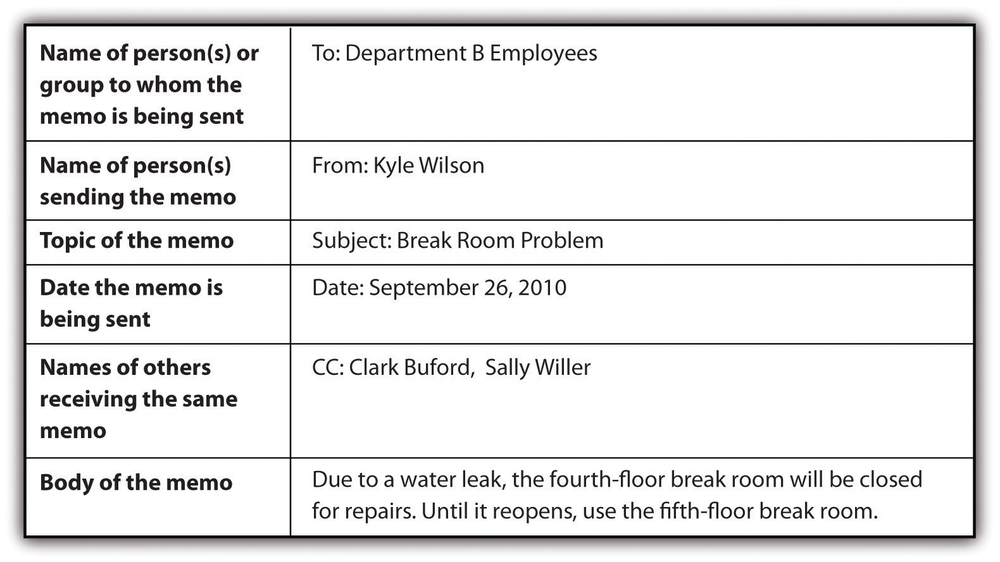

12.3 Composing Memos
Learning Objectives
- Recognize the typical usage for memos.
- Understand the parts of a memo.
A memo is less formal than a business letter but more formal than an e-mail. Memos are usually sent within a company addressing a single issue or meeting and are typically short. A common feature of memos is the heading followed by a colon. Memos typically include the following set components.

Companies often have blank memo forms in digital and hard-copy formats.
Key Takeaways
- Typically memos are short, are used for internal company matters, and cover a single issue.
- Typically memos include six parts: to, from, subject, date, carbon copy, and body text.
Exercises
- Make a list of five reasons a person might use a memo at work instead of sending an e-mail or mailing a business letter to employees.
- Create a memo form in your computer. Use your form to create a handwritten memo and a typed memo.
- Use a memo template for the next writer’s memo you submit with a college writing project. (See Chapter 5 "Planning" for more on how to develop a writer’s memo and a statement of purpose that describes message, audience, voice, attitude, reception, and tone.)